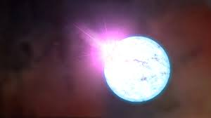

protostar is the earliest compact form of a star. It is an accumulation of gas that has
been collapsed and compressed down from a huge dust-gas cloud. This early phase of a star has a
time period of about 100,000 years. As time passes, pressure and gravity rise, which pushes the
baby star to collapse into a denser form. Almost all the energy emitted by the protostar arises from
the heat generated from the gravitational force. In this state, there is enough energy to start
the nuclear reactions.
Red Dwarf
A red dwarf star is the coolest and smallest type of star in the main-sequence phase.
They are the most common class of stars in the Milky Way. As per the latest estimation, they make
up 75% of the stars in our galaxy. Even though they are very common, they are not easily detectable
due to their relatively low luminosity. Proxima Centauri is a red dwarf, just like the majority of
our nearest stars. They are much cooler and dimmer than the Sun. Even though they are exhausted
from a lack of adequate fuel, they are still able to squeeze available hydrogen into their core.
White Dwarf
When a star loses its entire reserve of hydrogen fuel in the core and lacks enough
mass to push heavier elements into a nuclear fusion reaction, it transforms into a white dwarf star.
The outward push from the fusion reaction stops, and the stellar core collapses inward due to its
own overwhelming gravitational pull. As it is hot enough to emit light, it shines to a mediocre
extent. On the other hand, there is no nuclear fusion happening inside the core. It will continue
to lose its heat and energy until it reaches the Universe’s background temperature. This phenomenon
takes about hundreds of billions of years to complete.
Neutron Star
Stars with a mass between 1.35 and 2.1 times that of the Sun don’t transform into
white dwarfs when their core collapses. In this scenario, stars do not disintegrate into a
supernova explosion; instead, they become extremely dense celestial bodies called neutron stars.
stellar core collapses into a much denser form with extremely high gravitational pull.
As the name suggests, they are entirely made of neutrons. Gravitational force is so strong
that the matter collapses to the level of a neutron. Gravity crushes protons and electrons
together to form neutrons. If stars are much more massive, then the stars explode as
supernovas and ultimately turn into black holes.

Any feedback is appreciated. Please leave your thoughts here.